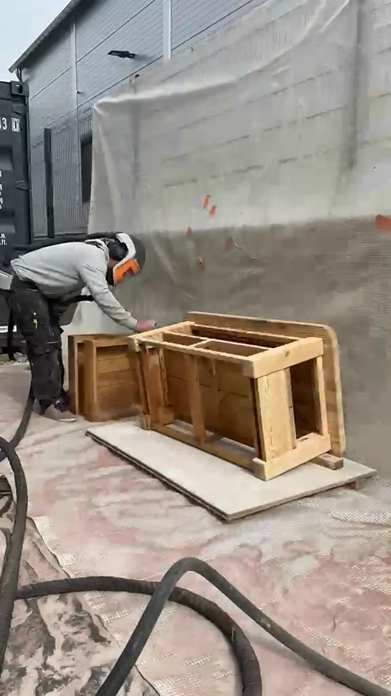

Notre histoire
À propos d’Alp’Aero
Artisan passionné, ancré dans les Hautes-Alpes, au service de la beauté naturelle des matériaux.

Fondateur
Un artisan au service de la beauté naturelle
Chez Alp’Aero, le savoir-faire est ancré dans l’authenticité, la passion et le respect des matériaux naturels. Basé dans les Hautes-Alpes, je mets à profit plus de 5 ans d’expérience dans le sablage de chalets et l’aérogommage de mobilier.
Animé par un profond amour pour la beauté brute et naturelle, je m’attache à révéler le véritable caractère du bois et de la pierre. Mon travail consiste à enlever les traces du temps et de l’usure afin de redonner aux matériaux leur forme la plus pure, en révélant leurs textures, leurs veines et leurs nuances d’origine. Qu’il s’agisse de rénover un chalet ou de restaurer un meuble, chaque projet est réalisé avec précision, soin et une grande attention aux détails.
Alliant techniques traditionnelles et approche contemporaine, Alp’Aero propose des réalisations à la fois durables et intemporelles. Chaque surface raconte une histoire, et ma mission est de la préserver tout en lui insufflant une nouvelle vie.
Depuis le cœur des Hautes-Alpes, l’objectif est simple : transformer, restaurer et sublimer les matériaux naturels pour créer des réalisations authentiques, durables et fidèles à leur origine.
Ce qui nous guide
Nos valeurs
Ancrage local
Basé dans les Hautes-Alpes, je connais les matériaux et les contraintes du territoire alpin.
5 ans d’expérience
Un savoir-faire forgé sur le terrain, au contact du bois, de la pierre et du métal.
Respect des matériaux
L’aérogommage est une technique douce qui préserve l’intégrité des surfaces naturelles.
Zone d’intervention
Hautes-Alpes & alentours
Embrun, Les Orres, Gap, Briançon, Vars… et au-delà sur demande.
Demander un devis gratuit